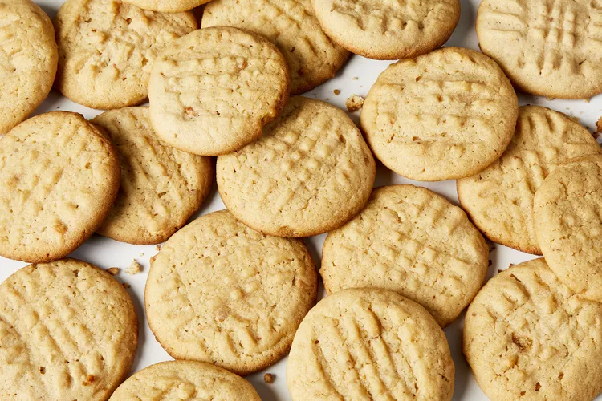

Peanut Butter Cookies

Description
Tasty, crunchy peanut butter cookies that are easy to make and satisfying to eat. Made with real butter and a mix of brown and white sugar to give them a sweet, warm flavour. An instant hit with adults and children alike!
Ingredients
- 1 cup unsalted butter
- 1 cup crunchy peanut butter
- 1 cup white sugar
- 1 cup packed brown sugar
- 2 large eggs
- 2 1/2 cups all-purpose flour
- 1 1/2 teaspoons baking soda
- 1 teaspoon baking powder
- 1/2 teaspoon salt
Steps
- Beat butter, peanut butter, white sugar, and brown sugar with an electric mixer in a large bowl until smooth; beat in eggs.
- Sift flour, baking soda, baking powder, and salt into a separate bowl; stir into butter mixture until dough is just combined. Chill cookie dough in the refrigerator for 1 hour.
- Preheat the oven to 375 degrees F (190 degrees C)
- Roll dough into 1-inch balls and place 2 inches apart onto ungreased baking sheets. Flatten each ball with a fork, making a crisscross pattern.
- Bake in the preheated oven until edges are golden, about 10 minutes. Cool on the baking sheets briefly before removing to a wire rack to cool completely.